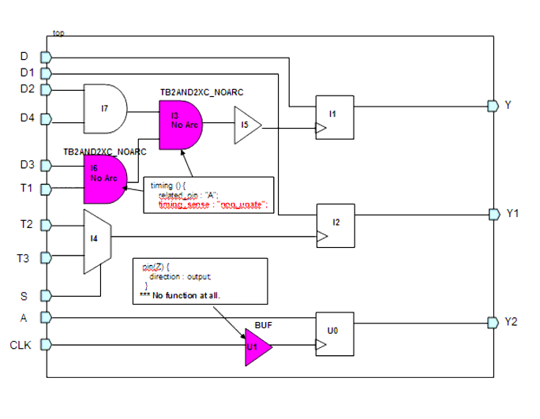

Description
This rule fires when Leda find the following DB cells in the clock line:
out pin of a DB cell that does not have a function.
out pin of a DB cell having "non_unate" in timing_sense.
Policy
DESIGN
Ruleset
CLOCKS
Language
Verilog
Type
Hardware
Severity
Error
`timescale 1ns/1ps module top(Y,Y1,D,D1,D2,D3,D4,T1,T2,T3,S,Y2,CLK,A); input D,D1,D2,D3,D4,T1,T2,T3,S,CLK,A; output Y,Y1,Y2; TB2DFFQXL I1(.Q(Y), .DATA(D), .CLK(I5_Y)); TB2DFFQXL I2(.Q(Y1), .DATA(D1), .CLK(I4_Y)); TB2AND2XL I7(.Y(I7_Y), .A(D4), .B(D2)); TB2AND2XA_NOARC I3(.Y(I3_Y), .A(I6_Y), .B(I7_Y)); // FAIL TB2BUFXL I5(.Y(I5_Y), .A(I3_Y)); TB2MUX2XL I4(.Y(I4_Y), .D0(T2), .D1(T3), .S0(S)); TB2AND2XC_NOARC I6(.Y(I6_Y), .A(T1), .B(D3)); // FAIL TB2DFFQXL U0 (.Q(Y2), .DATA(A), .CLK(n1)); BUF U1 (.A(CLK), .Z(n1) ); // FAIL endmoduleConfiguration
rule_deselect -all rule_select -policy DESIGN -rule NTL_CLK46Case schematic
